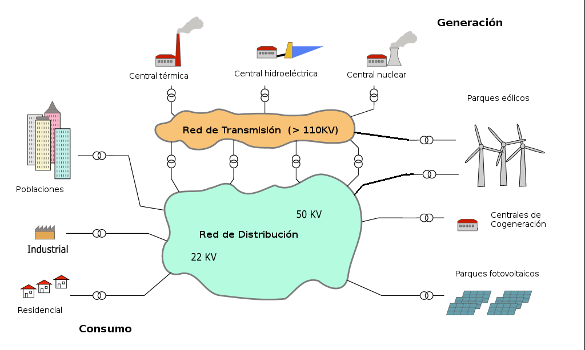

La Red Eléctrica a nivel de un gran territorio, está organizada en varias capas, de forma que existe un conjunto de elementos que hace el "transporte" desde las plantas de producción (térmica, hidráulica, nuclear, ciclo combinado, eólica, fotovoltaica, etc) hasta las vecindades de los puntos de consumo. La distancia entre los nodos de estas Redes pueden ser de centenares o incluso miles de kilómetros. Para esta función se utiliza muy alta tensión, con varios rangos en función de distancias y otros criterios, pero típicamente entre 130KV y 400 KV, de red trifásica. En algunos tramos la conexión entre los nodos de estas redes se hace con corriente continua, con tensiones superiores a los 400 KV. Esta parte de la Red se conoce como "Red de Alta Tensión" o también "Red de Transporte"
Los puntos de consumo pueden ser industriales, residenciales o grandes urbes. El suministro a grandes clientes industriales y grandes urbes se realiza con otro tipo de red, llamada "Red de Media", trifásica con tensiones entre 12KV y 60 KV. En grandes aglomeraciones urbanas el suministros se realiza en Baja Tensión (menor de 1kV).
Los objetivos de esta estructura son:
•Minimizar las pérdidas de transmisión y distribución.
•Aumentar la controlabilidad del sistema global.
•Disponer de la flexibilidad suficiente para atender a los cambios de consumo.
En la mayoría de los países, la gestión de la Red de Alta Tensión está encargada a entidades controladas por el Estado, mientras que las Redes de Distribución están controladas por empresas independientes.
Dado que cada parque eólico tiene una producción apreciable, desde el punto de vista de influencia en el global de la Red, generalmente se conectan directamente a la Red de Alta.

La producción de energía de origen eólico es ya un componente fundamental del mix energético. Por ejemplo, en la web de Red Eléctrica de España (https://demanda.ree.es/generacion_acumulada.html) se puede observar la participación de la producción eólica en España.

En este gráfico se muestra que la penetración de la energía eólica, similar a la nuclear.